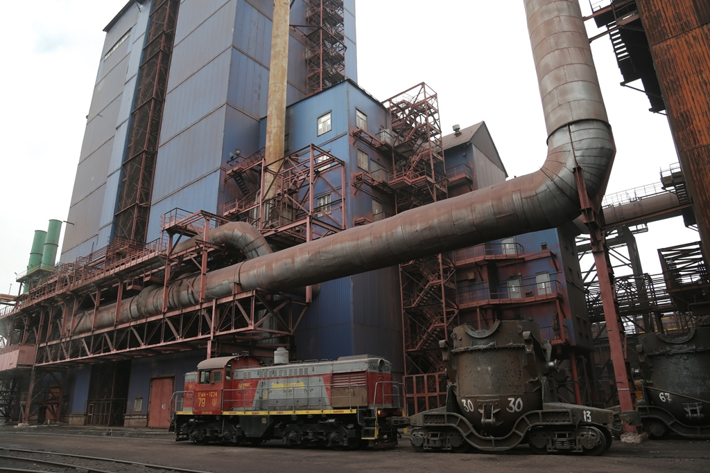

С опережением на шесть часов
В доменном цехе МК «Запорожсталь» завершен ремонт установки вдувания пылеугольного топлива, в ходе которого заменили барабан ПУТ. Работы выполнены на шесть часов раньше утвержденного графика. Новый барабан диаметром один метр и длиной полтора метра изготовили специалисты цеха металлоконструкций и механического цеха. Вулканизация, которую нанесли на это оборудование, защитит его от механических повреждений
- Завершить ремонт досрочно помогли слаженная работа и профессиональный подход, - говорит заместитель начальника доменного цеха по пылеугольному топливу Игорь Качанюк.